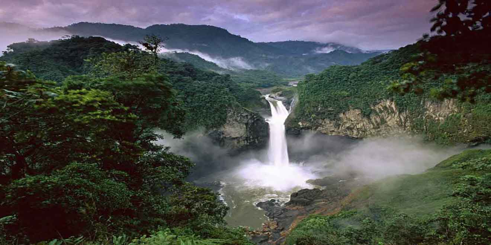

Uno de los mayores atractivos turísticos del Amazonas es la posibilidad de convivir con comunidades indígenas que han habitado la región durante siglos. Estas comunidades conservan conocimientos ancestrales sobre las plantas medicinales, la fauna local y las tradiciones culturales, ofreciendo a los visitantes una experiencia enriquecedora y educativa.
Además de su valor turístico, el Amazonas posee una enorme importancia ambiental. Es considerado uno de los principales reguladores climáticos del planeta y desempeña un papel fundamental en la producción de oxígeno, el almacenamiento de carbono y la conservación de la biodiversidad mundial. Por esta razón, el turismo en la región promueve cada vez más prácticas sostenibles y responsables que contribuyen a la protección de este ecosistema único.
Visitar el Amazonas significa descubrir paisajes extraordinarios, vivir aventuras inolvidables y conocer una de las regiones naturales más importantes de la Tierra. Su combinación de naturaleza, cultura y biodiversidad lo convierte en un destino ideal para los amantes del ecoturismo, la exploración y el aprendizaje sobre el medio ambiente.
